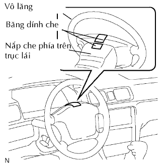
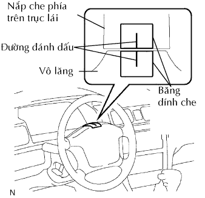
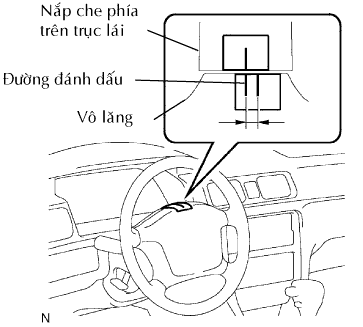
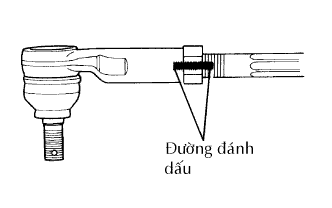
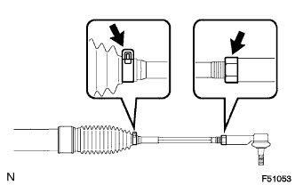

HỆ THỐNG LÁI > SỬA CHỮA |
| 1. VỊ TRÍ LÁI |
|  |
Che băng dính đỉnh tâm vô lăng và nắp che phía trên trục lái.
Lái xe theo đường thẳng 100 m (328 ft.) với tốc độ không đổi bằng 56 km/h (35 mph), và giữ vô lăng để duy trì việc kiểm tra.
|  |
Vẽ một đường thẳng trên băng dính như được chỉ ra trên hình vẽ.
|  |
Quay vô lăng đến vị trí trung tâm.
Vẽ một đường thẳng mới trên băng dính trên vô lăng như được chỉ ra trên hình vẽ.
Hãy đo khoảng cách giữa hai đường thẳng trên băng dính ở trên vô lăng.
Hãy tính toán khoảng cách đo được dưới dạng góc lái.
| 2. ĐIỀU CHỈNH GÓC LÁI |
|  |
Vẽ các đường thẳng trên các đầu thanh nối bên phải và bên trái và đầu thanh răng để dễ nhận biết.
Dùng dụng cụ đo, đo khoảng cách từ các đầu nối bên phải và bên trái đến các vít đầu thanh răng.
|  |
Tháo 2 kẹp cao su chắn bụi bên trái và bên phải ra khỏi các cao su thanh răng.
Nới lỏng các đai ốc hãm bên trái và bên phải.
Vặn các đầu thanh răng bên phải và bên trái bằng nhau theo các hướng khác nhau theo góc quay của vô lăng.
Xiết chặt các đai ốc hãm bên trái và bên phải.
Lắp các kẹp cao su chắn bụi bên trái và bên phải.